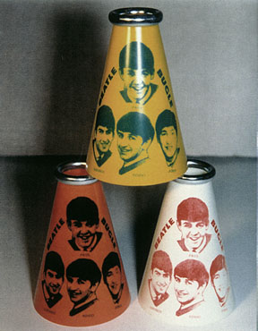

![[ return link ]](myback.gif)
 |
Released in 1964 by the Yell-A-Phone Co, Memphis, Tenn.
These were mainly sold at the concerts and some sporting events I would imagine.
Inside each Bugle (Megaphone) came a chain in a sealed envelope adhered to the
inside of the horn. The chain connected onto the rim and hung around the neck.
These
are very rare in near mint and unused condition. The three variations are
pictured. Recently an unknown quantity was found and are
for sale by Gary Hein.